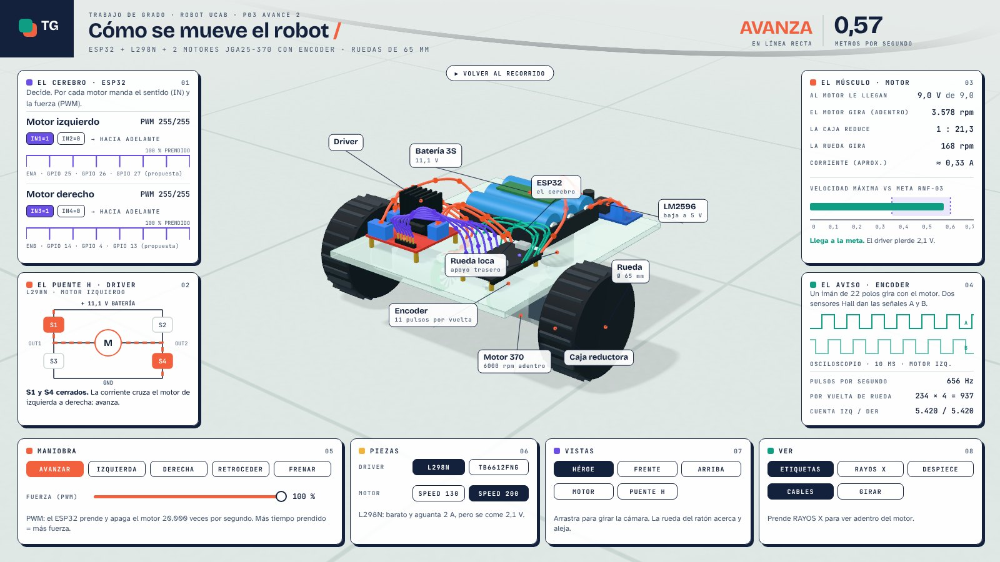
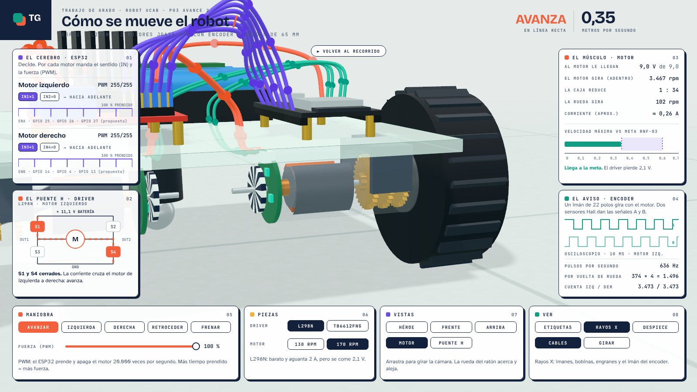

Prototipo P03 · Avance 2 · Simulador 3D
Cómo se mueve el robot, pieza por pieza
El ESP32 manda órdenes, el puente H las convierte en fuerza, la caja la reduce y el encoder avisa cuánto giró la rueda. Aquí se ve todo eso a la vez.

Abrir el simulador ▶Funciona sin internet, en una sola página. Mejor en computadora. En teléfono, gíralo de lado.
Cómo usarlo
Si no lo tocas, hace un recorrido solo. Al tocar cualquier cosa, lo manejas tú.
- Elige una maniobraAvanzar, girar, retroceder o frenar. También con las flechas ↑ ↓ ← →.
- Mueve la fuerzaLa barra de PWM. Mira cómo cambian el voltaje, las rpm y la velocidad.
- Cambia las piezasL298N o TB6612FNG, motor Speed 130 o Speed 200. La barra de la meta dice si llega.
- Mira por dentroVista MOTOR con RAYOS X: imanes, engranes y el imán del encoder.
Lo que se aprende
Sentido y fuerza
Por cada motor, dos pines dicen el sentido (IN) y uno la fuerza (PWM). El ESP32 prende y apaga el motor 20 000 veces por segundo.
Cuatro interruptores
Cerrando S1 y S4 la corriente cruza el motor en un sentido; con S2 y S3, en el otro. Con S3 y S4 frena.
La caja reduce
Adentro el motor gira a unas 3 600 rpm. La caja 1:21,3 lo baja a unas 170 rpm en la rueda, con más fuerza.
El encoder cuenta
11 pulsos por vuelta del motor × 21,3 = 234 por vuelta de rueda. Con las dos señales A y B salen 937 cuentas y el sentido.
De dónde salen los números
Todo lo que se ve sale de una sola fórmula, la misma del avance 1 en Colab.
| Dato | Valor |
|---|---|
| Batería 3S nominal | 11,1 V |
| Caída del driver | L298N 2,1 V · TB6612FNG 0,5 V |
| Motor 370 sin caja, 12 V | 6 000 rpm |
| Kit Emoshayoga: Speed 200 / Speed 130 (sin carga) | 280 rpm, caja 1:21,3 / 170 rpm, caja 1:35,5 |
| Peso del robot (supuesto) | 80 % de la velocidad sin carga |
| Encoder | 11 pulsos por vuelta del motor, canales A y B |
| Rueda y distancia entre ruedas | Ø 65 mm · 180 mm |
| Resultado con L298N, Speed 200, PWM 100 % | 9,0 V · 168 rpm · 0,57 m/s · 656 Hz |
La corriente es aproximada (0,07 A sin carga, 1,8 A bloqueado a 12 V, tabla del fabricante). Los pines son una propuesta: se confirman con el mapa de pines de la Fase II.
Evidencias
Capturas del simulador. Toca una para verla grande. Las tres últimas son de la primera versión (motor 1:34); la física es la misma.



Lo que el simulador no sabe
Usa números del fabricante y un supuesto de peso. No sabe cuánto pesa de verdad el robot, cómo patinan las ruedas ni cuánto cambia la batería al descargarse.
Por eso P03, en la semana 6, mide con el encoder real y reemplaza el 80 % supuesto por el valor medido.
Código para el ESP32
Mueve los dos motores con el L298N con las mismas maniobras y el mismo PWM del simulador, y lee los dos encoders por interrupciones para calcular rpm y velocidad. Junto a cada medida imprime la velocidad que predice el simulador, para comparar cuando llegue el hardware.
Se comprobó que da la misma velocidad que el modelo: 0,43 m/s con 75 % de PWM y 0,57 m/s con 100 %. El simulador de P03 es de lazo abierto (PWM directo), no tiene un PID ni sus ganancias. Por eso el PID viene incluido pero apagado (Kp, Ki y Kd en 0) hasta medirlas con el robot real. Pines: propuesta del mapa de pines.
Ver el código aquí
/*
P03 · Tracción: 2 motores con encoder + L298N + ESP32
Tesis: Robot móvil para búsqueda y transporte de componentes (UCAB Telecom)
Qué hace (igual que el simulador 3D de P03):
- Maniobras: avanzar, retroceder, girar a la izquierda, girar a la derecha y frenar.
- Un solo PWM para los dos motores (por defecto 75 %), que se sube y baja de 5 en 5 %.
- Teclas por el Monitor Serie (115200), las mismas del simulador:
w = avanzar s = retroceder a = izquierda d = derecha espacio o x = frenar
+ = subir PWM 5 % - = bajar PWM 5 %
c = alternar lazo abierto / lazo cerrado (PID de velocidad, ver abajo)
- Lee los dos encoders por interrupciones (cuadratura, 4 flancos) y calcula
rpm de la rueda y velocidad en m/s de cada lado.
- Imprime junto a lo medido la velocidad que PREDICE el modelo del simulador, para comparar.
IMPORTANTE (qué hay y qué falta):
- El simulador 3D de P03 es de lazo ABIERTO: PWM -> velocidad. NO trae un PID ni Kp, Ki, Kd.
Por eso aquí el PID viene con las ganancias en 0 (desactivado) hasta medirlas con el robot real.
Con las ganancias en 0 el robot se comporta igual que en el simulador.
- Los datos del motor son los del kit Emoshayoga JGA25-371 Speed 200 (tabla del vendedor).
- CARGA = 0.8 es un SUPUESTO del simulador: se mide en la prueba real (es el objetivo de P03).
- Pines: PROPUESTA del mapa de pines, se confirman en la Fase II.
Sentido de los encoders: avanzando, cada rueda debe dar cuentas POSITIVAS (m/s positivo).
Si una rueda da negativo yendo hacia adelante, intercambia sus pines A y B (en el código o en los cables).
Placa en Arduino IDE: "ESP32 Dev Module". Core ESP32 3.x (ledcAttach). Para el core 2.x mira "CORE 2.x".
*/
#include <Arduino.h>
// ---------- PINES (propuesta del mapa de pines del proyecto) ----------
// Motor izquierdo en el L298N
const uint8_t PIN_ENA = 25; // PWM. Quitar el puente ENA del L298N
const uint8_t PIN_IN1 = 26;
const uint8_t PIN_IN2 = 27;
// Motor derecho en el L298N
const uint8_t PIN_ENB = 14; // PWM. Quitar el puente ENB del L298N
const uint8_t PIN_IN3 = 4;
const uint8_t PIN_IN4 = 13;
// Encoders (canales A y B de cada motor). Alimentar los encoders con 3,3 V del ESP32.
const uint8_t PIN_ENC_IZQ_A = 18;
const uint8_t PIN_ENC_IZQ_B = 19;
const uint8_t PIN_ENC_DER_A = 16;
const uint8_t PIN_ENC_DER_B = 17;
// ---------- DATOS DEL MOTOR Y DEL ROBOT (los mismos de model.js) ----------
const float VBAT = 11.1f; // batería 3S nominal (V). Con la batería real, medirla (GPIO 32)
const float CAIDA_DRIVER = 2.1f; // caída del L298N (V). Si se usa un TB6612FNG: 0.5
const float RUEDA_D = 0.065f; // diámetro de la rueda (m)
const float VIA = 0.18f; // distancia entre ruedas (m)
const float RPM_12V = 280.0f; // Speed 200: rpm de la rueda sin carga a 12 V
const float RATIO = 21.3f; // caja reductora
const float PPR = 11.0f; // pulsos por vuelta del motor, por canal
const float CARGA = 0.8f; // SUPUESTO: con peso va al 80 % de la velocidad sin carga
// Cuentas por vuelta de la RUEDA con 4 flancos (A y B, subida y bajada) = 11 x 21.3 x 4 = 937,2
const float CUENTAS_VUELTA = PPR * RATIO * 4.0f;
// ---------- CONTROL ----------
float duty = 0.75f; // PWM de 0 a 1 (en el simulador empieza en 75 %)
const float PASO_DUTY = 0.05f; // + y - cambian 5 %
// PID de velocidad: GANANCIAS EN 0 = DESACTIVADO. No salen del simulador: hay que medirlas.
// Cuando tengas el robot, ajusta primero KP, luego KI, y deja KD en 0 si no hace falta.
const float KP = 0.0f; // PWM por cada m/s de error
const float KI = 0.0f; // PWM por cada m de error acumulado
const float KD = 0.0f; // PWM por cada m/s^2
bool lazoCerrado = false; // tecla c
// PWM del ESP32
const uint32_t PWM_HZ = 20000; // 20 kHz (el simulador usa 20 kHz), fuera de lo audible
const uint8_t PWM_BITS = 10;
const int PWM_MAX = (1 << PWM_BITS) - 1;
const uint32_t PERIODO_MS = 100; // se mide y se imprime 10 veces por segundo
// ---------- ENCODERS POR INTERRUPCIÓN ----------
// Decodificación en cuadratura: la tabla da +1, -1 o 0 según el cambio de (A,B).
volatile long cuentaIzq = 0;
volatile long cuentaDer = 0;
volatile uint8_t estIzq = 0, estDer = 0;
const int8_t TABLA[16] = {0, +1, -1, 0, -1, 0, 0, +1, +1, 0, 0, -1, 0, -1, +1, 0};
void IRAM_ATTR isrIzq() {
estIzq = ((estIzq << 2) | (digitalRead(PIN_ENC_IZQ_A) << 1) | digitalRead(PIN_ENC_IZQ_B)) & 0x0F;
cuentaIzq += TABLA[estIzq];
}
void IRAM_ATTR isrDer() {
estDer = ((estDer << 2) | (digitalRead(PIN_ENC_DER_A) << 1) | digitalRead(PIN_ENC_DER_B)) & 0x0F;
cuentaDer += TABLA[estDer];
}
// ---------- MANIOBRAS (sentido de cada motor, como MANIOBRAS en model.js) ----------
int dirIzq = 0, dirDer = 0; // +1 adelante, -1 atrás, 0 frena
void maniobra(int izq, int der) { dirIzq = izq; dirDer = der; }
// ---------- MOTORES ----------
// L298N: IN1/IN2 dan el sentido; ENA recibe el PWM. IN1=IN2 frena.
void moverMotor(uint8_t pinEn, uint8_t pinA, uint8_t pinB, int dir, float pwm) {
if (dir > 0) { digitalWrite(pinA, HIGH); digitalWrite(pinB, LOW); }
else if (dir < 0) { digitalWrite(pinA, LOW); digitalWrite(pinB, HIGH); }
else { digitalWrite(pinA, LOW); digitalWrite(pinB, LOW); pwm = 0; }
if (pwm < 0) pwm = 0;
if (pwm > 1) pwm = 1;
ledcWrite(pinEn, (int)(pwm * PWM_MAX)); // CORE 2.x: ledcWrite(canal, valor) con canal 0 y 1
}
// ---------- MODELO DEL SIMULADOR (para comparar) ----------
// Velocidad que predice model.js para un PWM dado: motor() en model.js
float velModelo(float pwm) {
float v = (VBAT - CAIDA_DRIVER) * pwm; // voltaje que le llega al motor
float rpm = RPM_12V * (v / 12.0f) * CARGA; // rpm de la rueda
return PI * RUEDA_D * rpm / 60.0f; // m/s
}
// ---------- PID DE VELOCIDAD (uno por rueda) ----------
struct Pid { float integral = 0, errPrev = 0; };
Pid pidIzq, pidDer;
float pidPaso(Pid &p, float objetivo, float medida, float dt) {
float e = objetivo - medida;
p.integral += e * dt;
if (p.integral > 1.0f) p.integral = 1.0f; // anti-windup simple
if (p.integral < -1.0f) p.integral = -1.0f;
float d = (e - p.errPrev) / dt;
p.errPrev = e;
float base = objetivo / max(velModelo(1.0f), 0.01f); // PWM que daría el modelo (alimentación adelantada)
float u = base + KP * e + KI * p.integral + KD * d;
if (u < 0) u = 0;
if (u > 1) u = 1;
return u;
}
// ---------- ARRANQUE ----------
void setup() {
Serial.begin(115200);
pinMode(PIN_IN1, OUTPUT); pinMode(PIN_IN2, OUTPUT);
pinMode(PIN_IN3, OUTPUT); pinMode(PIN_IN4, OUTPUT);
// CORE 3.x
ledcAttach(PIN_ENA, PWM_HZ, PWM_BITS);
ledcAttach(PIN_ENB, PWM_HZ, PWM_BITS);
// CORE 2.x, en su lugar:
// ledcSetup(0, PWM_HZ, PWM_BITS); ledcAttachPin(PIN_ENA, 0);
// ledcSetup(1, PWM_HZ, PWM_BITS); ledcAttachPin(PIN_ENB, 1);
pinMode(PIN_ENC_IZQ_A, INPUT_PULLUP); pinMode(PIN_ENC_IZQ_B, INPUT_PULLUP);
pinMode(PIN_ENC_DER_A, INPUT_PULLUP); pinMode(PIN_ENC_DER_B, INPUT_PULLUP);
attachInterrupt(digitalPinToInterrupt(PIN_ENC_IZQ_A), isrIzq, CHANGE);
attachInterrupt(digitalPinToInterrupt(PIN_ENC_IZQ_B), isrIzq, CHANGE);
attachInterrupt(digitalPinToInterrupt(PIN_ENC_DER_A), isrDer, CHANGE);
attachInterrupt(digitalPinToInterrupt(PIN_ENC_DER_B), isrDer, CHANGE);
maniobra(0, 0);
Serial.println("P03 traccion lista. Teclas: w s a d espacio | + - | c (lazo abierto/cerrado)");
if (KP == 0 && KI == 0 && KD == 0) Serial.println("PID sin ganancias (0): la tecla c solo usa el modelo del simulador.");
}
// ---------- LAZO PRINCIPAL ----------
uint32_t ultimo = 0;
long cuentaIzqPrev = 0, cuentaDerPrev = 0;
const char* nombreManiobra = "FRENADO";
void loop() {
// 1) Teclas del Monitor Serie (las mismas del simulador)
while (Serial.available()) {
char k = Serial.read();
if (k == 'w') { maniobra(+1, +1); nombreManiobra = "AVANZA"; }
else if (k == 's') { maniobra(-1, -1); nombreManiobra = "RETROCEDE"; }
else if (k == 'a') { maniobra(-1, +1); nombreManiobra = "GIRA A LA IZQUIERDA"; }
else if (k == 'd') { maniobra(+1, -1); nombreManiobra = "GIRA A LA DERECHA"; }
else if (k == ' ' || k == 'x') { maniobra(0, 0); nombreManiobra = "FRENADO"; }
else if (k == '+' || k == '=') duty = min(1.0f, duty + PASO_DUTY);
else if (k == '-') duty = max(0.0f, duty - PASO_DUTY);
else if (k == 'c') { lazoCerrado = !lazoCerrado; pidIzq = Pid(); pidDer = Pid(); }
}
// 2) Cada 100 ms: medir los encoders, mover los motores, imprimir
uint32_t ahora = millis();
if (ahora - ultimo < PERIODO_MS) return;
float dt = (ahora - ultimo) / 1000.0f;
ultimo = ahora;
noInterrupts();
long cI = cuentaIzq, cD = cuentaDer;
interrupts();
float vueltasIzq = (cI - cuentaIzqPrev) / CUENTAS_VUELTA / dt; // vueltas de rueda por segundo
float vueltasDer = (cD - cuentaDerPrev) / CUENTAS_VUELTA / dt;
cuentaIzqPrev = cI; cuentaDerPrev = cD;
float rpmIzq = vueltasIzq * 60.0f, rpmDer = vueltasDer * 60.0f;
float vIzq = vueltasIzq * PI * RUEDA_D; // m/s, con signo (+ = adelante)
float vDer = vueltasDer * PI * RUEDA_D;
float pwmIzq = duty, pwmDer = duty;
if (lazoCerrado && (KP > 0 || KI > 0 || KD > 0)) {
// objetivo: la velocidad que el modelo da para el PWM elegido, con el signo del sentido
pwmIzq = pidPaso(pidIzq, velModelo(duty), fabsf(vIzq), dt);
pwmDer = pidPaso(pidDer, velModelo(duty), fabsf(vDer), dt);
}
moverMotor(PIN_ENA, PIN_IN1, PIN_IN2, dirIzq, pwmIzq);
moverMotor(PIN_ENB, PIN_IN3, PIN_IN4, dirDer, pwmDer);
float vRobot = (vIzq + vDer) / 2.0f;
float wRobot = (vDer - vIzq) / VIA; // rad/s, + gira a la izquierda (igual que cinematica() en model.js)
Serial.printf("%-20s PWM %3d%% %s | izq %6.1f rpm %5.2f m/s | der %6.1f rpm %5.2f m/s | robot %5.2f m/s %5.2f rad/s | modelo %5.2f m/s\n",
nombreManiobra, (int)(duty * 100 + 0.5f), lazoCerrado ? "CERRADO" : "abierto",
rpmIzq, vIzq, rpmDer, vDer, vRobot, wRobot, velModelo(duty));
}
El código
- model.js: las fórmulas (voltaje, rpm, velocidad, encoder).
- robot.js: el robot en 3D, en metros reales.
- console.js y live.js: los paneles, los botones y el recorrido.
- stage.js: luz, sombras y el piso del laboratorio.
Hecho con el kit teardown (licencia MIT, ver LICENSE) y three.js. Para reconstruirlo: node sims/build.mjs ./robot-traccion desde la carpeta del kit.